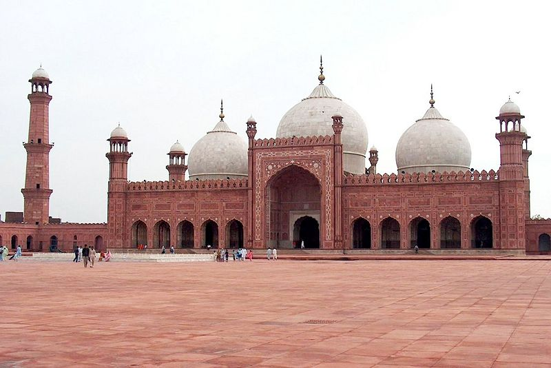
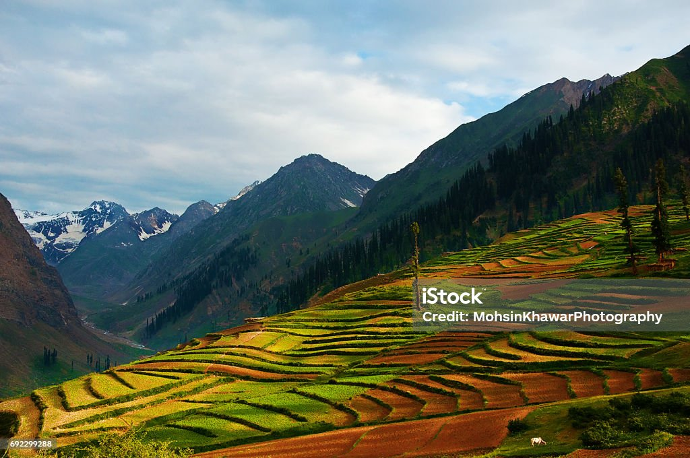
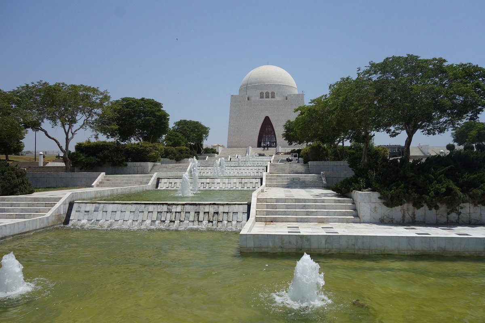
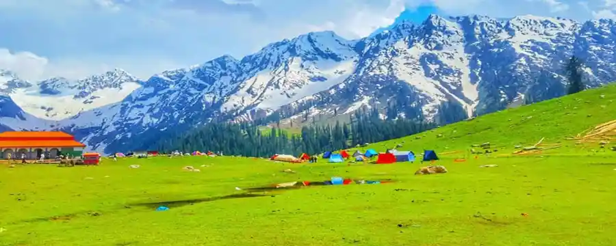

Places to be visit in Future
Badshahi Mosque
The Badshahi Mosque in Lahore was commissioned by the sixth Mughal Emperor Aurangzeb. Constructed between 1671 and 1673, it was the largest mosque in the world upon construction. It is the second largest mosque in Pakistan and the fifth largest mosque in the world..
Naraan Valley
Naran Valley, also known as Naran Kaghan, is renowned for its stunning landscapes, towering mountains, crystal-clear lakes, and lush green meadows. Naran serves as a gateway to the majestic Himalayas and offers a serene escape for nature enthusiasts and adventure seekers.
Mazar-e-Quaid
Mausoleum Of Quaid, also known as Jinnah Mausoleum or the National Mausoleum, is the final resting place of Quaid-e-Azam Muhammad Ali Jinnah, the founder of Pakistan. It is situated on Main M.A Jinnah Rd, Central Jacob Lines, Karachi, It is a very enjoyable Place and whole family enjoy to visit there.
Faisal Mosque

The Faisal Mosque is the largest mosque in Pakistan, located in the national capital city of Islamabad. Completed in 1986, it was designed by Turkish architect Vedat Dalokay, shaped like a desert Bedouin's tent, is an iconic symbol of Islamabad throughout the world.
Kumrat Valley
Kumrat is covered with green pastures and snow-clad mountains.
Things to Do
- 1. Shikara Ride on Dal Lake
- 2. Explore the Mughal Gardens
- 3. Experience Winter Sports in Gulmarg
- 4. Trek to Aru Valley in Pahalgam
- 5. Witness the Thajiwas Glacier in Sonamarg
Local Tips
- 1. Bargaining is a common practice in Kashmir, so don't hesitate to negotiate prices politely.
- 2. Respect the local customs and traditions, especially when visiting religious sites.
- 3. Kashmir is known for its handicrafts, so don't miss the opportunity to purchase exquisit.
- 4. Sample the delectable Kashmiri cuisine, including Rogan Josh, Gushtaba, and Kashmiri Kahwa.
- 5. Plan our trip during the spring or autumn months to experience the most pleasant weather and avoid the peak tourist season.